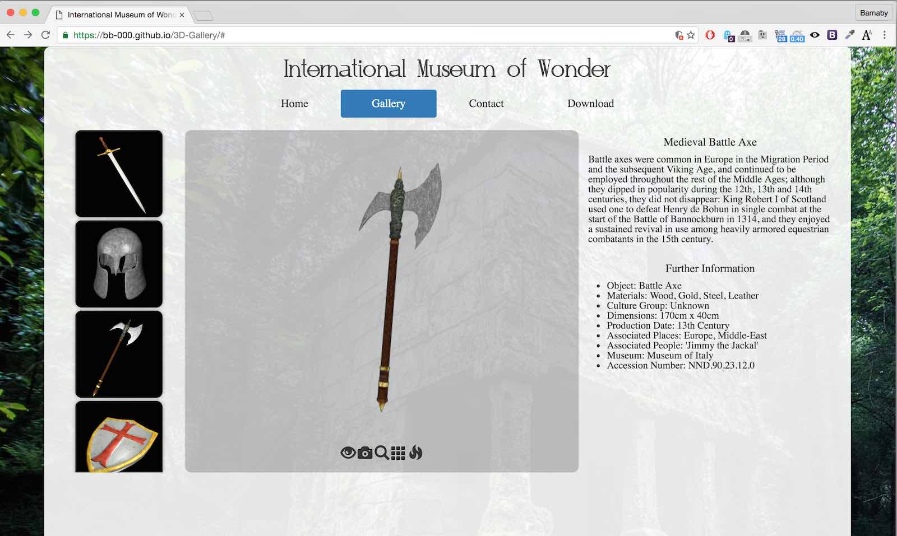
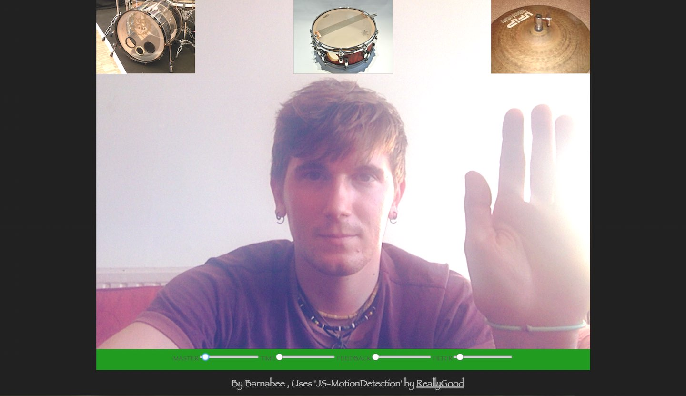

Projects
Axolotl Bass in Space is an arcade style top down shooter, where the player creates a Psytrance track. The gameplay centres on survival, destroying enemies and collecting assets which results in track composition:
- Shooting triggers arpeggiated notes.
- Different weapons have different sounds and timings.
- Some enemies shoot at you in various rhythms.
- Destroyed enemies wait for their cue then trigger a noise.
- Some entities playback sound based on player proximity.
- Power-ups change stats and add various effects to the music.
- Game stats, such as player health, affect the sound.
The game engine is built using pure Javascript and uses the Web Audio API, along with HTML5 and CSS3 for embedding the game and the user interface. Browser-based games allow multi-platform, easily accessible play.
All sound elements must be consistently and accurately synchronised with each other and the graphics. This is done by having a main scheduler function, which is kept in time by combining the less accurate ‘setTimeout’ and ‘requestAnimationFrame’ with the precision of the Web Audio clock. This implementation allows parameters and events to be changed and rescheduled accurately in real time.
Interactive 3D Model Gallery
Website showing a gallery of 3D models created in 3DS Max / Maya
Open here in new tab ›
A website built using Bootstrap and custom JS. Uses the canvas and X3DOM to display 3D models which I built using 3D modelling software. Objects can be viewed and moved around with the mouse, and interacted with further by using the buttons at the bottom of the viewbox. These buttons include a function to display different render modes and to animate the object.
Webcam motion sampler
Motion sensitive interactive audio sampler.Works best in Google Chrome.
Open here in new tab ›
Uses the HTML canvas and webcam input to create a motion sensitive audio sampler. Using javascript and the Wed audio API, I set up the triggers onscreen to play a b when the user touches the virtual images. This is calculated using a blend mode difference The triggers can be clicked on with the mouse to cycle through a bank of available noises. I also built a tape delay effect with feedback and a filter, which the user can control the parameters of to create fun feedback effects.